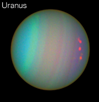

Uranus
Click on Uranus in the model to learn more!

The Ice Giant
Like Jupiter and Saturn, Uranus is a gas giant. Unlike all the other planets and most of the moons in our Solar System, Uranus spins on its side. Like Saturn, the thick atmosphere of Uranus is made up of methane, hydrogen and helium. But Uranus is an extremely cold planet. It has been called the "ice giant." It is believed that Uranus is made up of rock and ice and has a large rocky core.
Due to the tremendous planetary pressure of Uranus, there could possibly be trillions of large diamonds in or on the surface of this planet. Scientists also believe that on the surface of Uranus there may be a huge ocean. And, interestingly, it is thought that the temperature of this ocean may be extremely hot, maybe even as hot as 5000 degrees Fahrenheit.
Uranus also has rings similiar to Saturn. However due to its odd rotation axis, the rings of Uranus are vertical rather than horizontal. The rings of Uranus are composed mostly of black dust particles and large rocks.
Atmosphere and Temperature
Due to its distance from the Sun and gaseous composition, Uranus is justly called the Ice Giant. Uranis has large amounts of Ice in its atmosphere. In addition to a gaseous atmosphere, Uranus too experiences turbelant storms with winds reaching speeds of 560 miles per hour.
Uranus has the coldest atmospheric temperature of any planet in our Solar System with an average of -371 degrees Fahrenheit. In comparison, temperatures near the core of planet can reach highs of 8132 degrees Fahrenheit, still the lowest of the the outer planets.
Gravity
Much like Saturn, even though Uranus is massive in size it lacks a strong gravitational field. With a gravitational constant of 8.69 m/s^2 you would weight just 10% less on Uranus versus your weight on Earth.
Moons
Uranus has 27 known satellites consisting of 5 large icy moons and a numerous small moons. Uranus' largest moon is Titania which is around half the size of our own moon Luna.